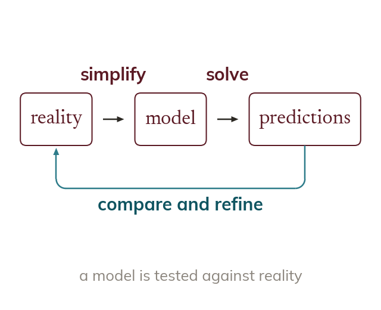
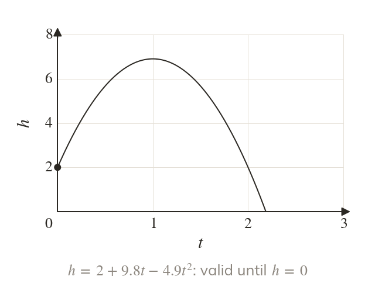
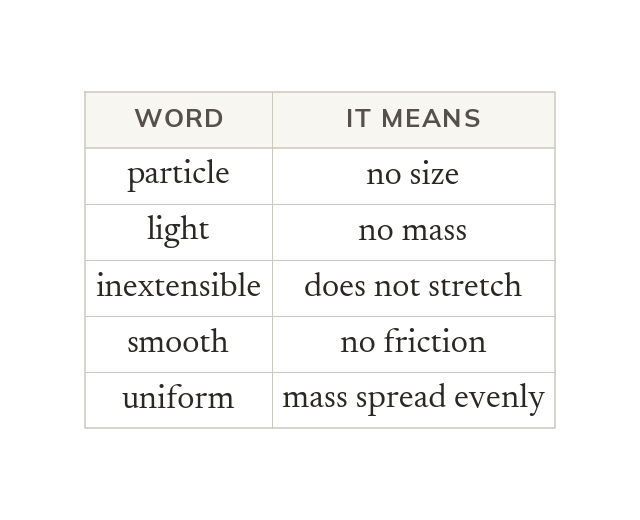
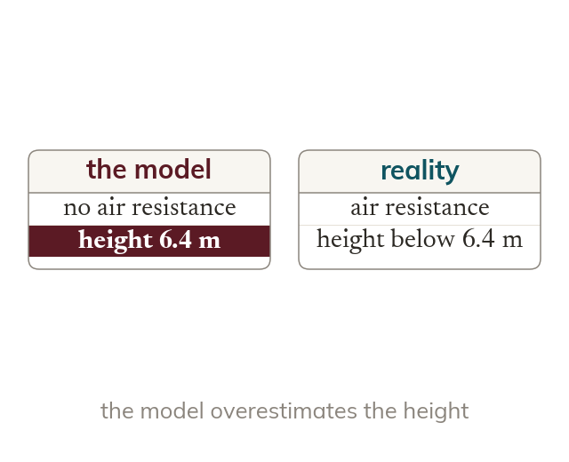

A model simplifies, then is tested
A mathematical model replaces a real situation with equations that can be solved. Its predictions are compared with reality, and the model is refined.
Every mechanics problem starts as a model, the real situation simplified until it can be solved. Knowing what each assumption ignores is how you judge an answer, and the modelling words met here are used in every mechanics chapter that follows.
Work down the page at your own pace. Write every answer in your book first, then click to check it.
Read each card, then follow the worked examples one step at a time.

A mathematical model replaces a real situation with equations that can be solved. Its predictions are compared with reality, and the model is refined.

A model is only valid where its answers make sense. A height model that gives a negative height has passed the moment the ball lands.
Pick an answer. If it's wrong, the feedback tells you which mistake it was.
Read each card, then follow the worked examples one step at a time.

A modelling word tells you exactly what the model ignores. The same few words are used in every mechanics question.

Ignoring air resistance makes the model simpler to solve. The model then predicts that a ball goes higher than it really does.
Pick an answer. If it's wrong, the feedback tells you which mistake it was.
Finished? Next lesson: M8.3 Quantities and Units.
For each skill, tap the one that is true for you today. Your Revise pages start with anything you mark Not yet.
Your ratings are saved on this device only.